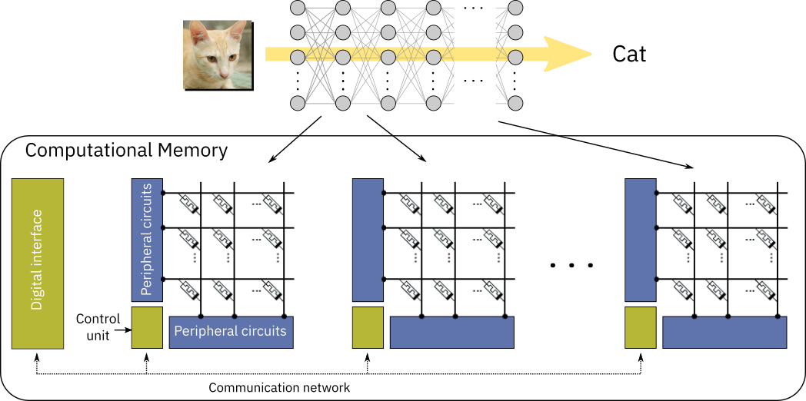

<?xml version = "1.0" encoding = "UTF-8"?>
<xsl:stylesheet version = "1.0" xmlns:xsl = "http://www.w3.org/1999/XSL/Transform">
<xsl:template match = "/"> 
<!doctype html>
<html lang="en">

	<head>
		<meta charset="utf-8">
    
		<title>Memristec Hands-On Tutorial</title>
		<meta name="description" content="NNML">
		<meta name="author" content="Emre Neftci">

		<meta name="apple-mobile-web-app-capable" content="yes">
		<meta name="apple-mobile-web-app-status-bar-style" content="black-translucent">

		<link rel="stylesheet" href="dist/reset.css">
		<link rel="stylesheet" href="dist/reveal.css">
		<link rel="stylesheet" href="nmilab.css">

		<!-- Theme used for syntax highlighted code -->
		<link rel="stylesheet" href="plugin/highlight/monokai.css">

    <script src="jquery.js"></script> 
    <script> 
    $(function(){
      $("#sdlides").load("slides_1_inner.html"); 
    });
    </script> 

  </head>    

	<body>
		<div class="reveal">
			<div class="slides">
        <section data-markdown data-vertical-align-top data-background-color=#B2BA67><textarea data-template>
            <h1> Memristor Models in PyTorch<br/> </h1>
            <ul>
              <li/> Slides derived from <a href='https://aihwkit.readthedocs.io/'>AIHWKIT Documentation</a>
        </textarea></section>

      <section data-markdown><textarea data-template>
      <h2> In-Memory Computing</h2>                                                     
      
      <ul>
        <li class="fragment"/> Goal: Multiple memristive crossbar arrays that communicate with each other
        <li /> Typical scenario: you would like to test performance/power/latency on AI benchmarks, but do not have large enough arrays at you disposal 
          <li class="fragment"/> <b>Offchip Training:</b> weights are typically trained using a conventional process and transferred (easy)
        <li class="fragment"/>   <b>Onchip Training: </b> weights are trained on the device (hard/open problem)
      </ul>
      </textarea></section>

      <section data-markdown><textarea data-template>
      <h2> Memristor Typees and Non-Idealities</h2>                                                     
      
      <ul>
        <li class="fragment"/> Different device technologies have different non-idealities
        <ul>
          <li/> Asymmetry
          <li/> Cycle-to-cycle noise
          <li/> Device-to-device noise
          <li/> Read and/or write non-linearity
          <li/> Drift, endurance, precision/ dynamic range ...
      </ul>
      </textarea></section>

      <section data-markdown><textarea data-template>
      <h2> Memristor Non-Idealities</h2>                                                     
      <div class=row>
      <div class=column>
      <p>Aymmetric non-linearity</p>
      
      </div>
      <div class=column>

      <p>Effects of aymmetric non-linearity</p>
      
      </div>
      </div>
      <p class=ref>[Agarwal_etal16_resimemo]</p>
      <div class=row>
      <div class=column>
        <p>Cycle to cycle non-linearity</p>
      
      </div>
      <div class=column>
        <p>Device to Device non-linearity</p>
      
      </div>
      </div>
      <ul>
        <li class="fragment"/> It is necessary to take these non-idealities into account during training
      </ul>
      </textarea></section>

      <section data-markdown><textarea data-template>
      <h2> Mapping conductances to weights</h2>                                                     
      
      <ul>
        <li class="fragment"/> 
      </ul>
      </textarea></section>

      <section data-markdown><textarea data-template>
      <h2> A Model of a Non-linear Device </h2>                                                     
      <ul>
        <li/> $$ TBD $$
      </ul>
      </textarea></section>

      <section data-markdown><textarea data-template>
      <h2> Offline learning: Custom Dynamics in pure PyTorch</h2>                                                     
      <ul>
        <li/> Here, we assume that the learning is done offline, in a way that is consistent with the device
        <li/> We implement read dynamics according to the device
        <li/> We train using exact updates. This is called hardware-aware training
      </ul>
      </textarea></section>

      <section data-markdown><textarea data-template>
      <h2> Online learning: Custom Updates in pure PyTorch</h2>                                                     
      <ul>
        <li/> Here, we assume that the devices are updated online.
        <li/> Recall that updates $$w \leftarrow w -\eta \nabla_w \mathcal{L}$$ are applied at the optimizer.step(). 
        <li/> So we need to create a custom optimizer
        <li/> TBD: code for custom optimizer
      </ul>
      </textarea></section>

      <section data-markdown><textarea data-template>
      <h2> AI Hardware Kit</h2>                                                     
      <div class=row>
        <div class=column>
        
        </div>
        <div class=column>
        
        </div>
      </div>
      <p class="ref">(Rasch et al. 2021)</p>
      <ul>
        <li class="fragment"/> aihwkit: Acceleration of training of crossbar arrays using PyTorch and GPUs.
        <li/> Programmable Functional simulator of forward and backward pass (for online training)
        <li/> Here we focus on online training, but aihwkit can also do offline training (hardware-aware training)
      </ul>
      </textarea></section>

      <section data-markdown><textarea data-template>
      <h2> Device configuration with aihwkit: RPUConfig</h2>                                                     
      <ul>
        <li class="fragment"/> 
        <li/> [TBD: Describe RPUConfig here with code block]
      </ul>
      </textarea></section>

      <section data-markdown><textarea data-template>
      <h2> Optimizer with aihwkit:AnalogSGD </h2>                                                     
      <ul>
        <li class="fragment"/> Hands-on tutorial aihwkit: 
        <li/> [TBD: Describe AnalogSGD here with code block]
        <li class="fragment"/> Hands-on tutorial aihwkit: 
      </ul>

      [](https://colab.research.google.com/drive/1WAAf5PEt5tgj4ah2vVm2gmA_nhYD8bVT?usp=sharing)

      </textarea></section>


 


 
      </div></div>

		<script src="dist/reveal.js"></script>
		<script src="plugin/zoom/zoom.js"></script>
		<script src="plugin/notes/notes.js"></script>
		<script src="plugin/math/math.js"></script>
		<script src="plugin/search/search.js"></script>
		<script src="plugin/markdown/markdown.js"></script>
		<script src="plugin/highlight/highlight.js"></script>
		<script>
			// More info about initialization & config:
			// - https://revealjs.com/initialization/
			// - https://revealjs.com/config/
			Reveal.initialize({
				hash: true,
        width: 1280,
        height: 720,
        margin: 0.0,
        navigationMode: 'grid',
        transition: 'fade',
				controls: true,
				progress: true,
				center: true,
				hash: true,
				plugins: [RevealMarkdown, RevealHighlight, RevealNotes, RevealMath.MathJax2],
        math: {
              mathjax: 'https://cdnjs.cloudflare.com/ajax/libs/mathjax/2.7.0/MathJax.js',
              config: 'TeX-AMS_HTML-full', 
              TeX: { Macros: { Dp: ["\\frac{\\partial #1}{\\partial #2}",2] }}
            },
			});
		</script>
	</body>
</html>
